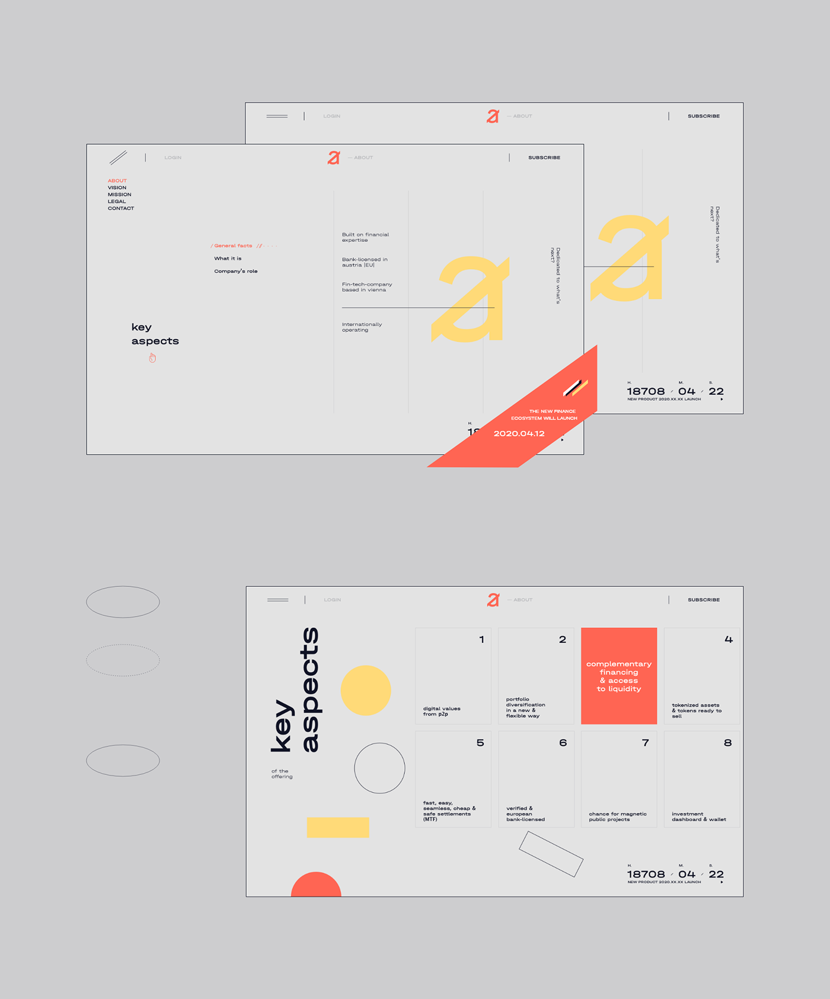
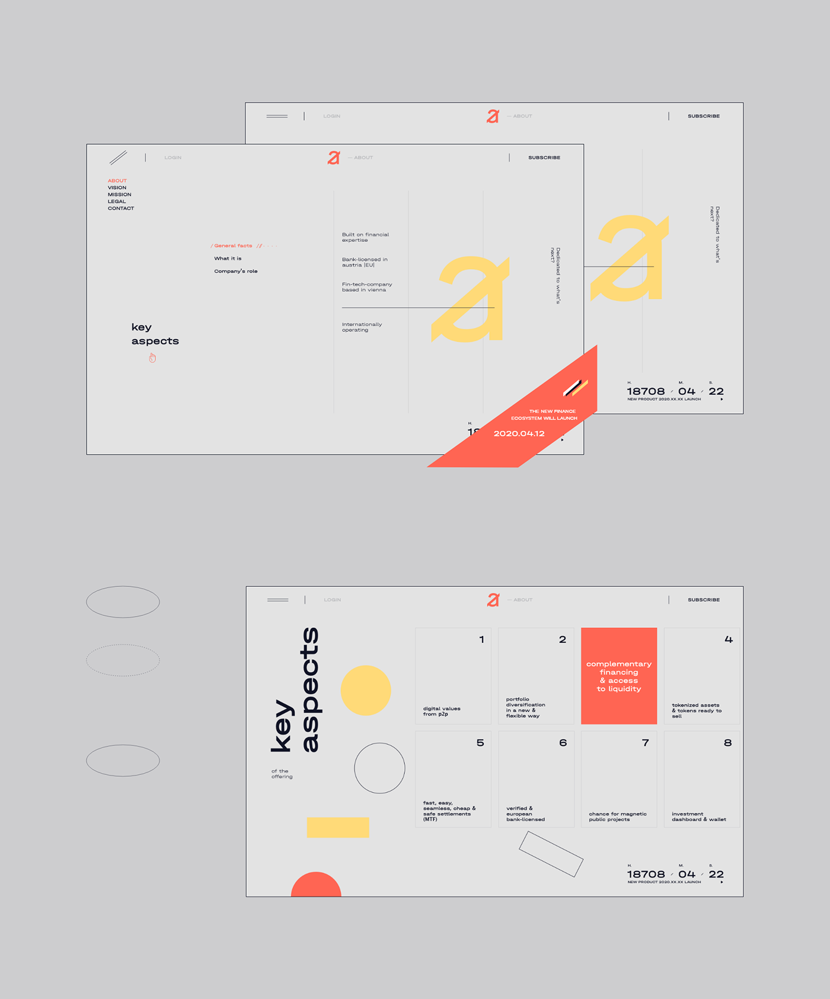

NEED A HELP WITH PROFESSIONAL
WEBSITE / BRAND DESIGN?
Hit us up at bigman@nextpage.com.ua
reach us by +380931015425
More works and info are available at our website
Branding for Punch Studios, a recording studio based in Suffolk.
Colours and typography reflect the vast array of unique and rare vintage equipment available at the studio. The blue dot indicates a passion for Ipswich Town, whilst playfully replicating a studio mixing desk light.